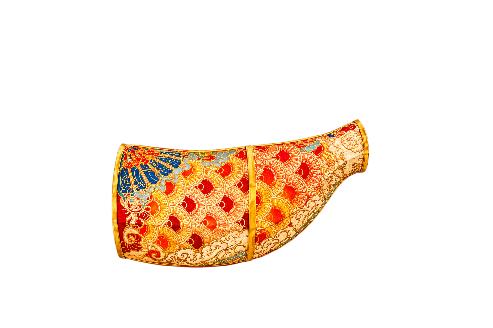
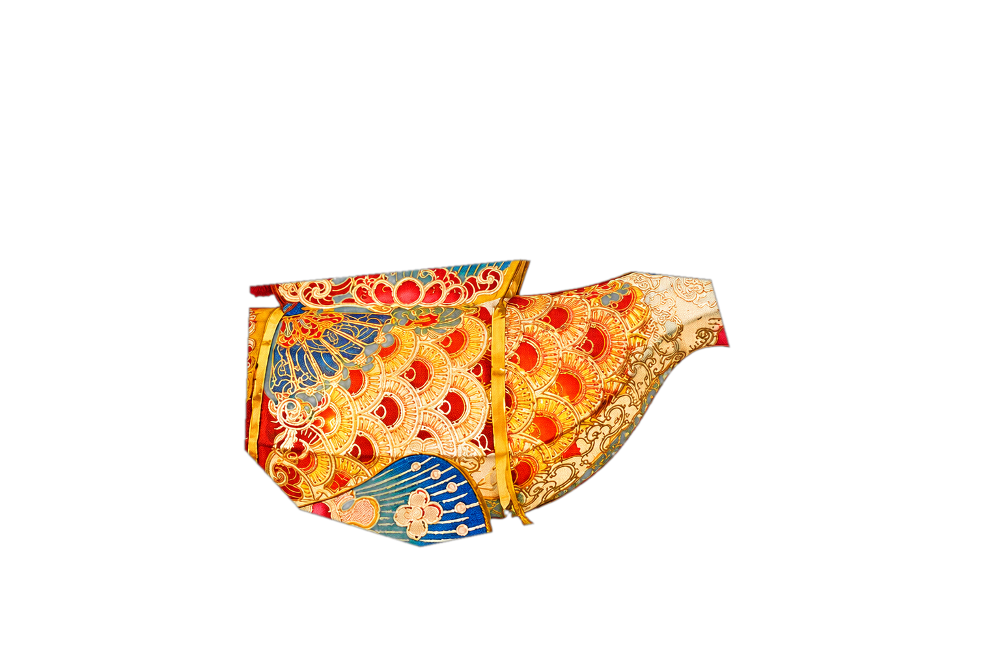
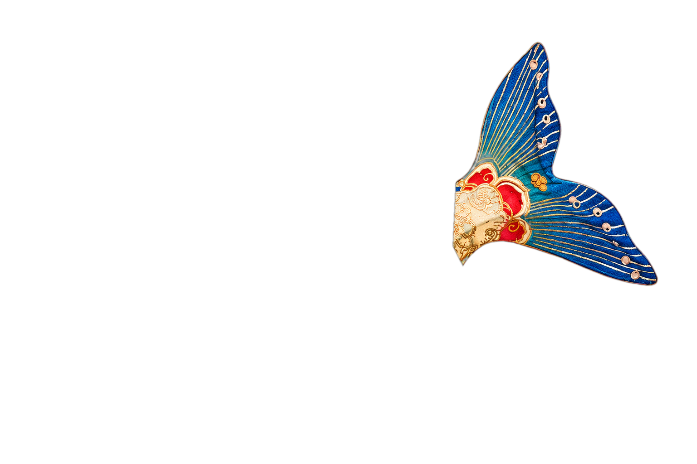
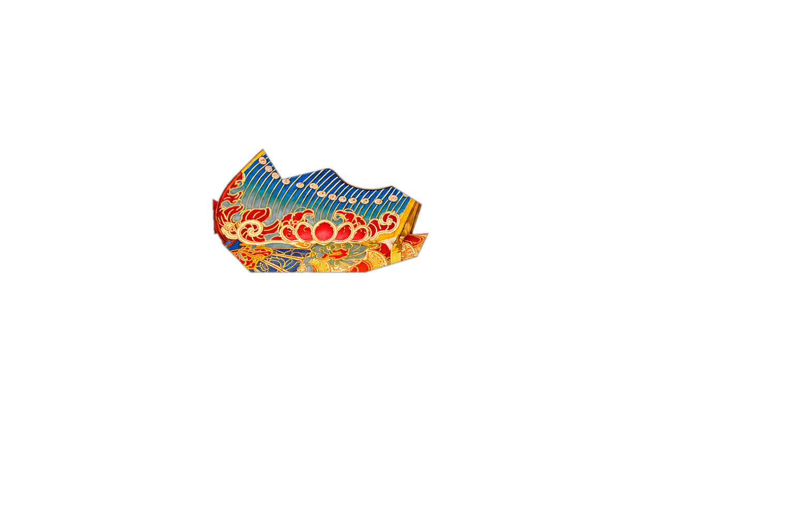
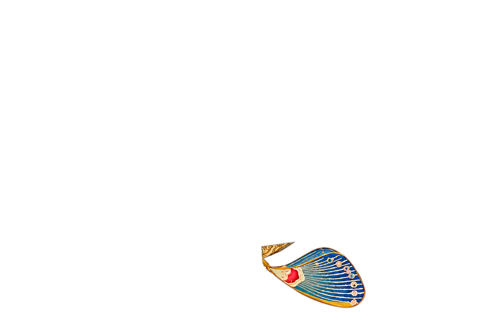
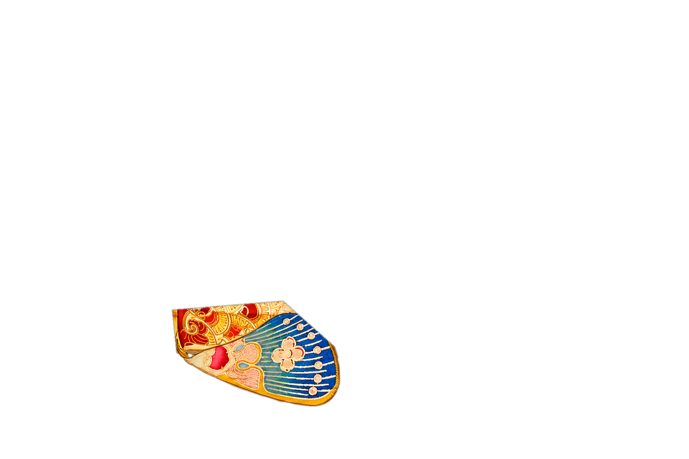
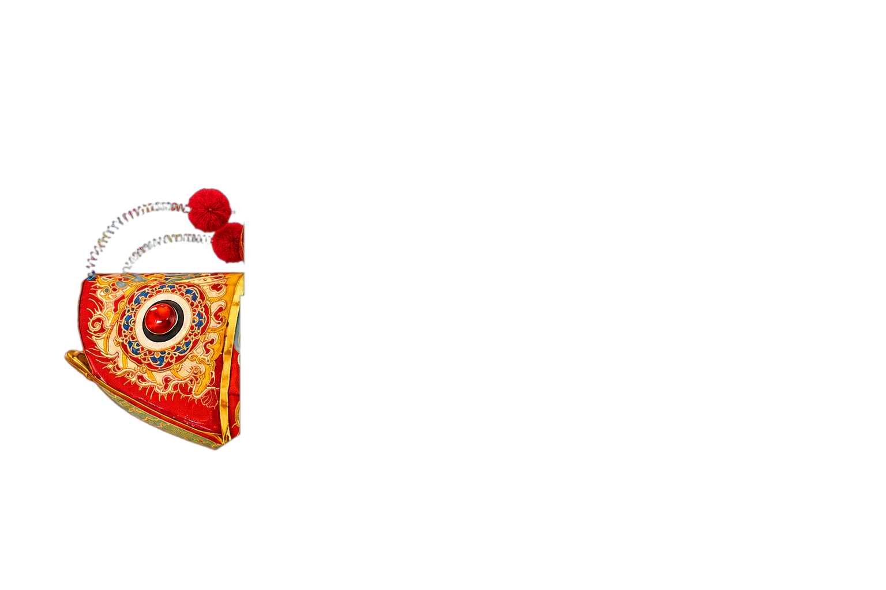
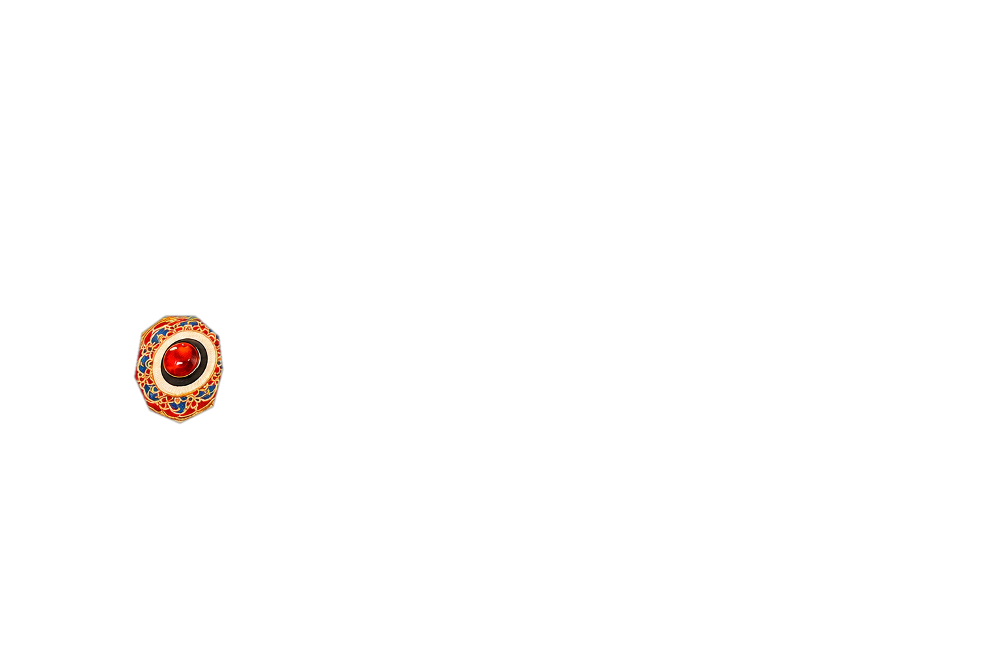
FISH LANTERN · LIVE AR
Beyond the Label
Ready to scan
Align the fish head and central body inside the frame.
IMAGE-TRACKED EXPERIENCE
Point your camera at the physical fish lantern.
The effect appears only after the fish pattern is recognized. Use the horizontal side shown in the reference.
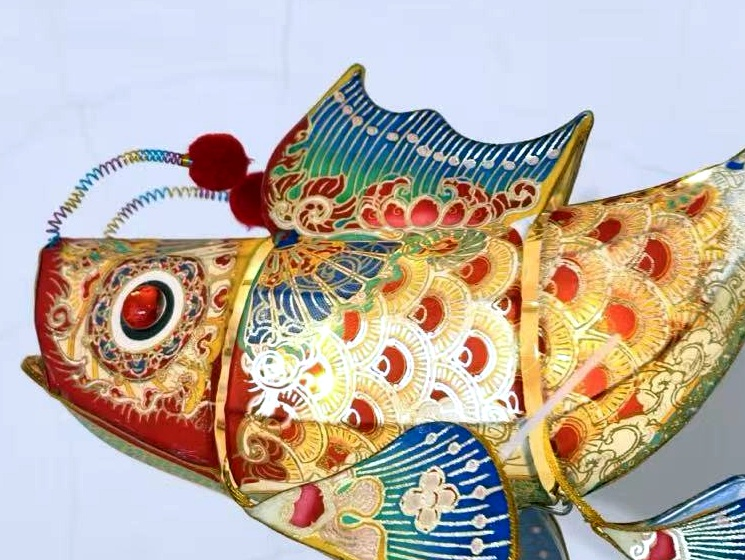
SCAN THIS AREA01 · DEFINED
Labels make distance visible.
A DIAGNOSIS IS NOT A DEFINITION.
See the whole person.
BEYOND STIGMA · TOWARD UNDERSTANDINGCAMERA UNAVAILABLE